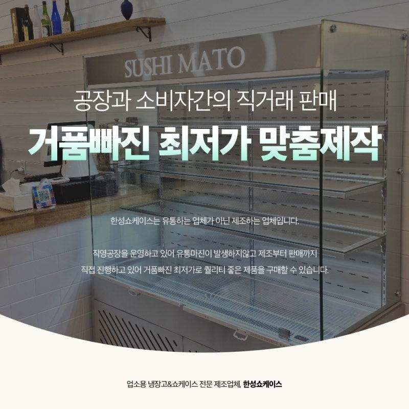
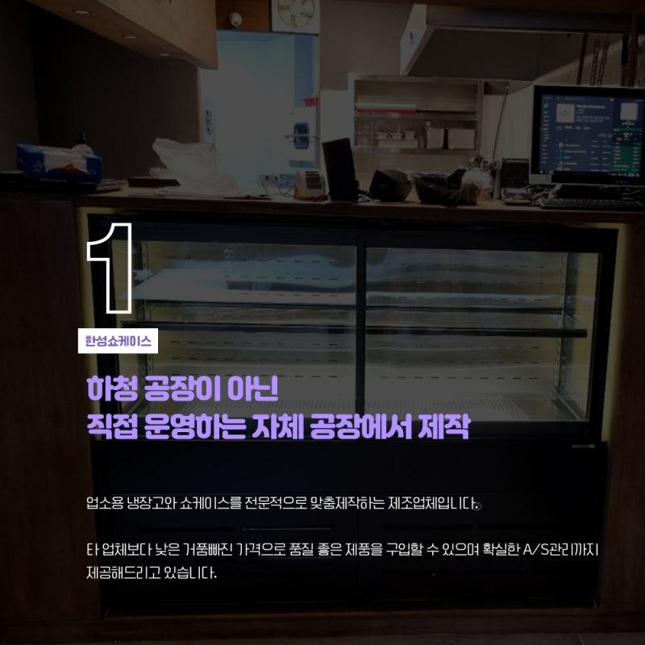
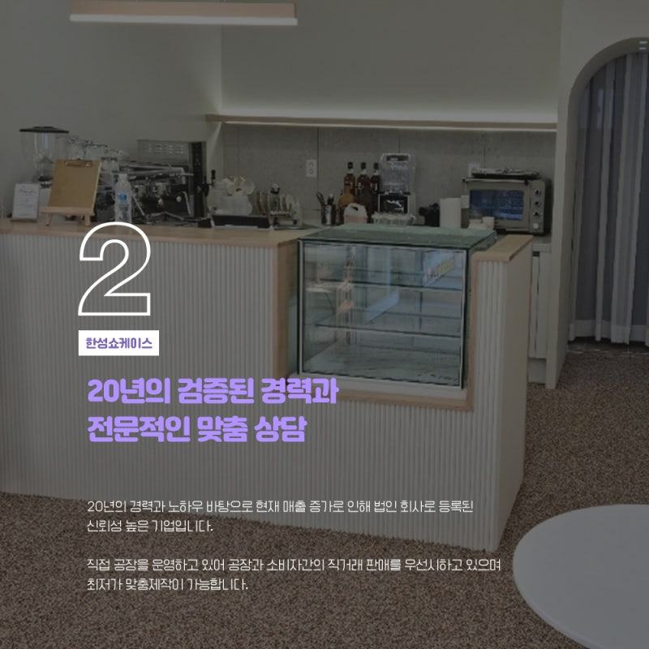
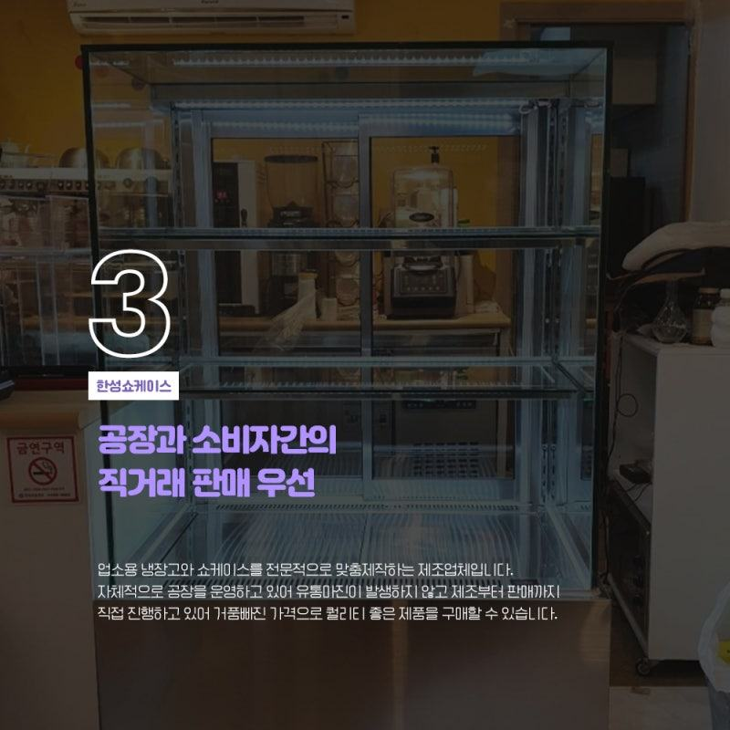
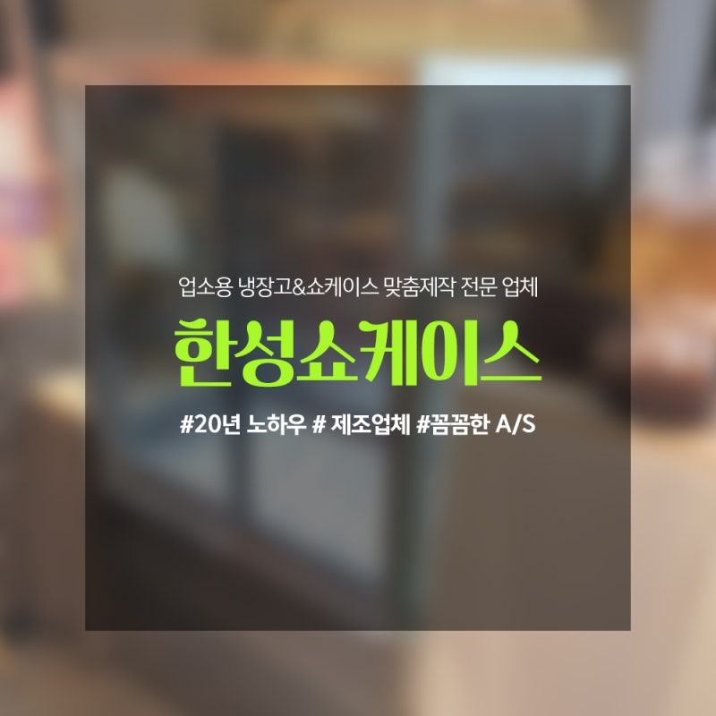
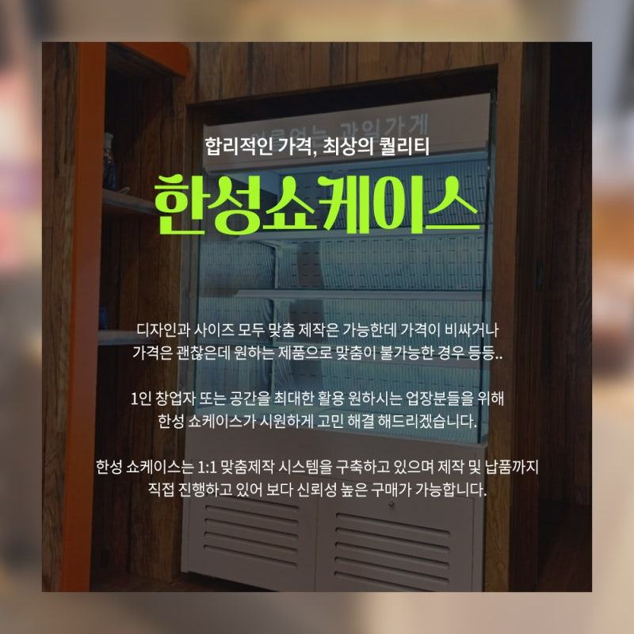

한성제품
냉장쇼케이스 사이즈, 좁은 매장에서 치수 정하는 순서

냉장쇼케이스 사이즈는 자리 폭보다 손님 통로와 직원 작업 공간을 먼저 빼고 남는 치수로 정해야 합니다. 그다음 진열 상품 높이로 단수를 정하고, 문이 열리는 반경과 뒷면 통풍 공간, 출입문 반입 폭까지 확인하면 좁은 매장에서도 실패가 적습니다.
안녕하세요. 매장 치수에 맞춰 냉장쇼케이스를 만드는 한성쇼케이스입니다.
혼자 창업하시는 사장님들의 매장은 대개 넉넉하지 않습니다. 그래서 쇼케이스를 고를 때 가장 먼저 막히는 게 디자인도 가격도 아닌 "이게 우리 가게에 들어가나?" 하는 문제입니다.
기성 제품 카탈로그를 넘기다 보면 조금 크거나 조금 작은 것만 눈에 띄고, 딱 맞는 크기는 좀처럼 없습니다.
조금 큰 걸 억지로 넣으면 통로가 막히고, 작은 걸 넣으면 남는 틈이 아깝죠.
오늘은 좁은 매장에서 냉장쇼케이스 사이즈를 정할 때 어떤 순서로 재고 따져야 하는지, 현장에서 자주 놓치는 부분과 함께 정리해 보겠습니다.
1. 통로와 작업 공간부터 빼고 재기
많은 분들이 벽에서 벽까지 재고 그 폭을 그대로 쇼케이스 폭으로 생각하십니다. 하지만 먼저 빼야 할 것이 있습니다.
손님이 서서 고르는 공간, 다른 손님이 그 뒤로 지나가는 통로, 직원이 쇼케이스 뒤에서 채우거나 꺼내는 작업 공간입니다.
이 공간을 바닥에 테이프로 표시해 두고 실제로 걸어 보세요. 손님 두 명이 엇갈려 지나갈 수 있는지, 직원이 쪼그려 앉아 아래 칸을 채울 수 있는지 몸으로 확인하면 쇼케이스에 쓸 수 있는 진짜 치수가 나옵니다.
- 손님이 서서 고르는 공간
- 뒤로 지나가는 통로
- 직원 보충·작업 공간
2. 깊이와 높이는 상품이 정합니다
깊이는 진열할 상품 크기와 문 방식에서 정해집니다. 케이크나 반찬 통처럼 깊은 상품은 깊이가 필요하고, 음료나 소포장 상품은 얕아도 충분합니다.
좁은 매장이라면 깊이를 줄이고 높이로 칸을 늘리는 방법이 통로를 지키는 데 유리합니다.
높이는 가장 큰 상품 높이에 손이 들어갈 여유를 더해 단 간격을 정하고, 그 단을 몇 개 쌓을지로 결정합니다.
맨 위 칸이 손님 눈높이를 넘어가면 상품이 잘 보이지 않으니, 진열 효과도 함께 생각해 정하세요.
카운터 위에 올리는 소형 쇼케이스라면 카운터 상판 깊이와 계산대 기기 자리를 먼저 빼야 합니다. 포스기와 카드 단말기, 포장 공간이 겹치면 쇼케이스가 들어가도 계산하는 손이 불편해집니다.


3. 문 열림과 통풍 공간
여닫이 문은 열리는 반경만큼 앞이나 뒤에 공간이 필요합니다. 공간이 빠듯하다면 슬라이딩 문으로 바꾸는 것만으로 통로가 살아납니다.
앞문과 뒷문 중 어느 쪽을 쓸지도 동선에 맞춰 정해야 합니다.
벽이나 가구에 딱 붙여 넣는 경우 기계실 열이 빠질 공간을 꼭 남겨야 합니다. 이 공간을 빼먹고 치수를 꽉 채우면 냉기가 약해지고 전기 사용이 늘어납니다.
콘센트 위치도 치수에 포함해 생각하세요. 쇼케이스 뒤에 콘센트가 가려지면 전원 플러그 두께만큼 벽에서 떨어져야 해서, 계획한 치수보다 앞으로 튀어나오게 됩니다.
- 문이 열리는 방향과 반경
- 뒷면·하부 통풍 공간
- 콘센트 위치
4. 한 대보다 여러 대가 나을 때
공간이 작을수록 큰 쇼케이스 한 대보다 작은 쇼케이스 여러 대로 나누는 편이 효율적인 경우가 많습니다.
기둥이나 창문 사이처럼 끊긴 자리를 나눠 쓰면 남는 틈 없이 진열 면적을 확보할 수 있고, 품목별로 온도와 조명을 다르게 맞출 수도 있습니다.
마지막으로 반입 경로입니다. 출입문 폭, 계단 회전 공간, 엘리베이터 크기를 재서 알려 주시면 분리 제작이 필요한지 미리 판단할 수 있습니다.
사이즈만 줄인다고 공간이 정리되는 건 아니니, 크기와 디자인을 함께 맞춰 매장이 정돈돼 보이도록 잡아 드립니다.
체크리스트
- 통로·작업 공간 제외한 실제 폭
- 가장 큰 상품 높이와 단수
- 문 방식과 열리는 반경
- 기계실 통풍 공간과 콘센트
- 출입문·계단·엘리베이터 폭
현장에서 자주 보는 경우: 들어갈 사이즈를 찾다 지치는 1인 창업 매장
1인 창업자가 운영하는 매장은 생각보다 넓기 어렵습니다. 예산을 마련해 두고도 좁은 매장에 들어갈 만한 크기가 없어 이 제품 저 제품을 비교하며 한참 고생하시는 사장님을 자주 뵙습니다.
한성쇼케이스는 직접 제조하는 공장이라 매장 치수에 맞춰 원하는 사이즈로 제작하면서 디자인도 함께 챙깁니다.
전자제품은 언젠가 손볼 일이 생기는 만큼, 판매 이후의 사후 관리를 가장 우선에 두고 구매 고객을 챙기고 있습니다.





자주 묻는 질문
실측은 어떻게 해서 알려 드리면 되나요?
설치 자리의 폭·깊이·높이와 함께 주변 통로 폭, 출입문 폭, 콘센트 위치를 재서 사진과 함께 보내 주세요.
기둥이나 창문이 있다면 그 위치도 표시해 주시면 좋습니다.
기성 규격보다 몇 센티만 줄여도 제작이 되나요?
가능합니다. 맞춤 제작은 매장 치수에 맞춰 폭과 깊이, 높이를 조정하므로 작은 차이도 반영할 수 있습니다.
나중에 매장을 옮기면 사이즈가 안 맞지 않을까요?
이전 가능성이 있다면 너무 특수한 형태보다 범용적인 비율로 설계하는 방법도 있습니다. 상담 때 계획을 말씀해 주시면 함께 고려해 드립니다.
매장 조건에 맞춰 만드는 한성쇼케이스
원하시는 제품 사진과 설치할 공간 사진만 보내 주셔도 매장에 맞는 구성을 추천해 드립니다.
- 전국 240여 개 A/S 전담 센터 운영
- 본사 대량 자재 매입으로 품질 대비 합리적인 가격
- 유럽제·삼성 냉각 콤프레셔 적용
- 국내 최초 쇼케이스 전문 디자이너 상주
매장 폭과 원하는 진열 구성을 알려 주세요. 실측과 견적을 안내해 드립니다.
031-986-2458